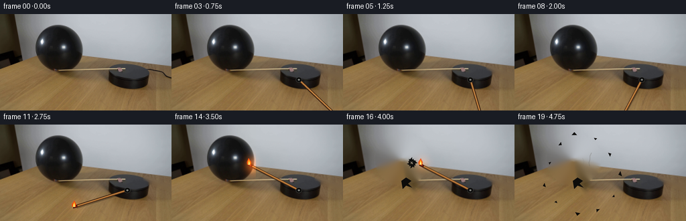
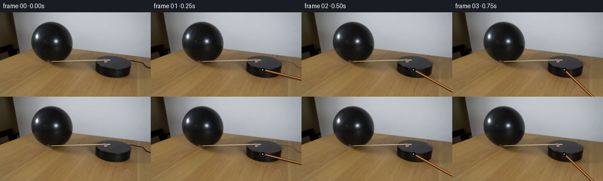

CODING AGENTS AS PIXEL WORLD MODELS
traex/GPT-5.6-Sol · 0114
点击播放 · 原生 RGB 像素
逐轮保存的候选
回放视频、检查图与代码变化。
每份候选均可单独播放。实际图片检查记录在下方工具轨迹中。
候选 01播放与检查图
点击播放 · 原生 RGB 像素


展开代码变化
--- 上一保存版本
+++ 本次保存版本
@@ -0,0 +1,171 @@
+from pathlib import Path
+import math
+import cv2
+import numpy as np
+from PIL import Image, ImageDraw
+import artifact_io
+
+ROOT = Path(__file__).resolve().parent
+N, H, W = 20, 144, 256
+S = 4
+rng = np.random.default_rng(114)
+first = np.asarray(Image.open(ROOT / 'first_frame.png').convert('RGB'), dtype=np.uint8)
+
+# Remove the initially right-pointing match from all later backgrounds. A narrow
+# Telea fill retains the photographed platform/table texture.
+old_mask = np.zeros((H, W), np.uint8)
+cv2.line(old_mask, (218, 82), (255, 95), 255, 7, cv2.LINE_AA)
+cv2.ellipse(old_mask, (221, 84), (6, 5), 0, 0, 360, 255, -1)
+clean = cv2.inpaint(first, old_mask, 5, cv2.INPAINT_TELEA)
+# Preserve the main body of the black platform, which the narrow cleaning mask grazes.
+platform_keep = np.zeros((H, W), np.float32)
+cv2.ellipse(platform_keep, (191, 99), (31, 15), 0, 0, 360, 1, -1)
+platform_keep = cv2.GaussianBlur(platform_keep, (0, 0), 1.2)[..., None]
+clean = np.clip(clean * (1-platform_keep) + first * platform_keep, 0, 255).astype(np.uint8)
+
+# Clean plate for after the balloon bursts. Balloon body, knot, and short tether are
+# removed independently, preserving the wood edge behind it.
+balloon_mask = np.zeros((H, W), np.uint8)
+cv2.ellipse(balloon_mask, (88, 52), (38, 36), -4, 0, 360, 255, -1)
+cv2.fillPoly(balloon_mask, [np.array([[82,79],[103,79],[99,91],[88,91]], np.int32)], 255)
+cv2.line(balloon_mask, (94, 87), (106, 102), 255, 4, cv2.LINE_AA)
+balloon_mask = cv2.dilate(balloon_mask, np.ones((5,5),np.uint8), iterations=1)
+no_balloon = cv2.inpaint(clean, balloon_mask, 7, cv2.INPAINT_TELEA)
+# The wall behind the upper balloon is smooth in the source. Remove faint inpaint seams.
+soft = cv2.GaussianBlur(no_balloon, (0,0), 1.0)
+a = cv2.GaussianBlur((balloon_mask>0).astype(np.float32), (0,0), 2.5)[...,None]
+no_balloon = np.clip(no_balloon*(1-.32*a)+soft*(.32*a),0,255).astype(np.uint8)
+
+def poly(draw, pts, fill):
+ draw.polygon([(int(round(x*S)),int(round(y*S))) for x,y in pts], fill=fill)
+
+def ellipse(draw, box, fill, outline=None, width=1):
+ draw.ellipse(tuple(int(round(v*S)) for v in box), fill=fill, outline=outline, width=max(1,int(width*S)))
+
+def line(draw, pts, fill, width):
+ draw.line([(int(round(x*S)),int(round(y*S))) for x,y in pts], fill=fill, width=max(1,int(width*S)), joint='curve')
+
+def add_glow(arr, x, y, strength, radius):
+ yy,xx=np.mgrid[0:H,0:W]
+ d=((xx-x)**2/(radius**2)+(yy-y)**2/(radius*1.1)**2)
+ a=np.exp(-2.1*d)[...,None]*strength
+ color=np.array([255.,112.,24.])[None,None,:]
+ return np.clip(arr.astype(float)*(1-a*.20)+color*a,0,255).astype(np.uint8)
+
+def draw_match(frame, theta, fi, contact=False):
+ """Draw a rigid match rotating in the image plane about the platform pin."""
+ # Platform pivot and the burning outer end. Screen-angle increase is clockwise.
+ px,py=190.0,98.0
+ L=80.5
+ ux,uy=math.cos(theta),math.sin(theta)
+ # Keep the stick just above the photographed base.
+ sx,sy=px+ux*L, py+uy*L
+ # Warm light is composited below the opaque match/flame.
+ flick = (0.82 + 0.12*math.sin(fi*2.41) + 0.06*math.sin(fi*5.13))
+ frame=add_glow(frame,sx,sy-3,0.12*flick + (0.09 if contact else 0),14)
+ hi=Image.fromarray(frame).resize((W*S,H*S), Image.Resampling.BICUBIC).convert('RGBA')
+ ov=Image.new('RGBA',hi.size,(0,0,0,0)); d=ImageDraw.Draw(ov,'RGBA')
+ # A soft contact shadow under the arm makes it sit in the photographed scene.
+ line(d, [(px+1.1,py+2.0),(sx+1.1,sy+2.0)], (9,6,4,70), 3.5)
+ # Wood shaft: dark edge, ochre body and directional highlight.
+ line(d, [(px,py),(sx,sy)], (52,27,12,255), 4.0)
+ line(d, [(px,py-0.2),(sx,sy-0.2)], (174,111,52,255), 2.45)
+ line(d, [(px,py-0.55),(sx,sy-0.55)], (224,166,88,215), .62)
+ # Black hub clamp at center of platform.
+ ellipse(d,(px-4.5,py-4.0,px+4.5,py+4.0),(12,12,11,255),(71,72,69,255),.7)
+ ellipse(d,(px-1.45,py-1.35,px+1.45,py+1.35),(122,124,120,255))
+ # Match head, oriented as a small elongated capsule.
+ nx,ny=-uy,ux
+ head=[(sx+ux*3.6+nx*2.5,sy+uy*3.6+ny*2.5),
+ (sx+ux*4.8-nx*1.9,sy+uy*4.8-ny*1.9),
+ (sx-ux*1.8-nx*2.1,sy-uy*1.8-ny*2.1),
+ (sx-ux*2.5+nx*1.6,sy-uy*2.5+ny*1.6)]
+ poly(d,head,(69,19,12,255))
+ line(d,[(sx-ux*.5,sy-uy*.5),(sx+ux*3.2,sy+uy*3.2)],(176,48,21,240),1.4)
+ # Flame rises vertically from the moving head, with deterministic natural flicker.
+ ax=sx+ux*3.0; ay=sy+uy*3.0
+ sway=1.25*math.sin(fi*1.73)+.45*math.sin(fi*4.21)
+ fh=10.5*flick
+ flame=[(ax-3.0,ay-.5),(ax-3.2+sway*.15,ay-4.2),
+ (ax+sway,ay-fh),(ax+3.0+sway*.12,ay-4.0),(ax+2.7,ay-.1)]
+ poly(d,flame,(241,73,13,235))
+ inner=[(ax-1.65,ay-.2),(ax-1.4,ay-3.7),(ax+sway*.55,ay-fh*.75),
+ (ax+1.7,ay-3.4),(ax+1.5,ay-.1)]
+ poly(d,inner,(255,184,27,250))
+ core=[(ax-.65,ay-.2),(ax-.45,ay-2.6),(ax+sway*.25,ay-fh*.48),(ax+.75,ay-2.1),(ax+.65,ay-.1)]
+ poly(d,core,(255,244,174,255))
+ out=Image.alpha_composite(hi,ov).convert('RGB').resize((W,H),Image.Resampling.LANCZOS)
+ return np.asarray(out,dtype=np.uint8), (sx,sy)
+
+def overlay_contact_warmth(frame, amount):
+ yy,xx=np.mgrid[0:H,0:W]
+ # Restrict glow to the right-facing skin of the black balloon.
+ dist=((xx-119)/15)**2+((yy-61)/19)**2
+ alpha=np.exp(-2.2*dist)*amount
+ alpha *= ((xx<126)&(xx>97)&(yy<85)).astype(float)
+ col=np.array([145.,62.,18.])
+ return np.clip(frame*(1-alpha[...,None]*.30)+col*alpha[...,None],0,255).astype(np.uint8)
+
+def burst_overlay(frame, fi):
+ """Balloon latex fragments obey ballistic trajectories after the rupture."""
+ t=(fi-16)*.25 + .06
+ hi=Image.fromarray(frame).resize((W*S,H*S),Image.Resampling.BICUBIC).convert('RGBA')
+ ov=Image.new('RGBA',hi.size,(0,0,0,0)); d=ImageDraw.Draw(ov,'RGBA')
+ origin=np.array([103.0,58.0])
+ velocities=[(-62,-38),(-43,-73),(-17,-91),(22,-83),(48,-54),(68,-18),
+ (55,23),(26,49),(-11,55),(-51,34),(-72,3)]
+ for j,(vx,vy) in enumerate(velocities):
+ p=origin+np.array([vx*t, vy*t+46*t*t])
+ ang=.55*j + (2.2*(-1 if j%2 else 1))*t
+ ca,sa=math.cos(ang),math.sin(ang)
+ sz=2.2+(j%3)*.65
+ shape=[]
+ for qx,qy in [(-sz,-.65*sz),(1.15*sz,0),(-.25*sz,.9*sz)]:
+ shape.append((p[0]+qx*ca-qy*sa,p[1]+qx*sa+qy*ca))
+ poly(d,shape,(10,9,8,245))
+ # sharp specular glint characteristic of stretched black latex
+ if j%3==0:
+ line(d,[shape[0],shape[1]],(94,89,80,170),.45)
+ # Torn knot/remnant remains on the table.
+ poly(d,[(87,84),(94,79),(102,84),(97,88),(103,94),(94,91),(89,96)],(13,12,10,255))
+ # Fine grey smoke curls rise from the hot contact point in the last frames.
+ if fi>=17:
+ age=fi-17
+ pts=[(112,62),(110+age*.5,57),(113-age*.3,52),(111+age*.8,47),(114+age*.4,42)]
+ line(d,pts,(100,94,86,max(35,105-age*20)),1.0+age*.18)
+ pts2=[(106,65),(103-age*.3,60),(105-age*.6,55),(102-age*.2,50)]
+ line(d,pts2,(123,116,106,max(25,75-age*14)),.7+age*.12)
+ return np.asarray(Image.alpha_composite(hi,ov).convert('RGB').resize((W,H),Image.Resampling.LANCZOS),np.uint8)
+
+frames=[]
+for i in range(N):
+ if i==0:
+ frames.append(first.copy())
+ continue
+ # Use the source scene until rupture. A short clean-plate blend makes frame 0 -> 1
+ # continuous even where the original right-pointing match was removed.
+ if i<16:
+ base=clean.copy()
+ if i==1:
+ a=cv2.GaussianBlur((old_mask/255.).astype(np.float32),(0,0),1.2)[...,None]*.35
+ base=np.clip(base*(1-a)+first*a,0,255).astype(np.uint8)
+ else:
+ base=no_balloon.copy()
+ # Clockwise constant angular speed. At frame 14 the burning head reaches the
+ # balloon's right surface at approximately (118,61).
+ theta=math.radians(-1.0 + (208.2/14.0)*min(i,14))
+ if i>14:
+ # Hold pressure at the contact point for one beat before the pop.
+ theta=math.radians(207.2 + .55*math.sin((i-14)*1.7))
+ if i<18:
+ base,tip=draw_match(base,theta,i,contact=(i>=13))
+ if 12<=i<16:
+ base=overlay_contact_warmth(base,(i-11)/4.0)
+ if i>=16:
+ base=burst_overlay(base,i)
+ frames.append(base)
+
+frames=np.stack(frames).astype(np.uint8)
+assert frames.shape==(20,144,256,3)
+assert np.array_equal(frames[0],first)
+artifact_io.save(frames,ROOT)
候选 02播放与检查图
点击播放 · 原生 RGB 像素

展开代码变化
--- 上一保存版本
+++ 本次保存版本
@@ -54,12 +54,14 @@
def draw_match(frame, theta, fi, contact=False):
"""Draw a rigid match rotating in the image plane about the platform pin."""
- # Platform pivot and the burning outer end. Screen-angle increase is clockwise.
- px,py=190.0,98.0
- L=80.5
- ux,uy=math.cos(theta),math.sin(theta)
- # Keep the stick just above the photographed base.
- sx,sy=px+ux*L, py+uy*L
+ # The top of the platform is an oblique horizontal plane. A circle in that
+ # plane projects to this shallow ellipse, so the arm stays on the tabletop
+ # instead of unrealistically dipping below it. Screen-angle increase is clockwise.
+ px,py=190.0,85.0
+ rx,ry=72.0,15.0
+ sx,sy=px+math.cos(theta)*rx, py+math.sin(theta)*ry
+ vl=math.hypot(sx-px,sy-py)
+ ux,uy=(sx-px)/vl,(sy-py)/vl
# Warm light is composited below the opaque match/flame.
flick = (0.82 + 0.12*math.sin(fi*2.41) + 0.06*math.sin(fi*5.13))
frame=add_glow(frame,sx,sy-3,0.12*flick + (0.09 if contact else 0),14)
@@ -100,9 +102,9 @@
def overlay_contact_warmth(frame, amount):
yy,xx=np.mgrid[0:H,0:W]
# Restrict glow to the right-facing skin of the black balloon.
- dist=((xx-119)/15)**2+((yy-61)/19)**2
+ dist=((xx-115)/12)**2+((yy-77)/14)**2
alpha=np.exp(-2.2*dist)*amount
- alpha *= ((xx<126)&(xx>97)&(yy<85)).astype(float)
+ alpha *= ((xx<124)&(xx>98)&(yy<89)&(yy>55)).astype(float)
col=np.array([145.,62.,18.])
return np.clip(frame*(1-alpha[...,None]*.30)+col*alpha[...,None],0,255).astype(np.uint8)
@@ -111,7 +113,7 @@
t=(fi-16)*.25 + .06
hi=Image.fromarray(frame).resize((W*S,H*S),Image.Resampling.BICUBIC).convert('RGBA')
ov=Image.new('RGBA',hi.size,(0,0,0,0)); d=ImageDraw.Draw(ov,'RGBA')
- origin=np.array([103.0,58.0])
+ origin=np.array([104.0,67.0])
velocities=[(-62,-38),(-43,-73),(-17,-91),(22,-83),(48,-54),(68,-18),
(55,23),(26,49),(-11,55),(-51,34),(-72,3)]
for j,(vx,vy) in enumerate(velocities):
@@ -152,13 +154,13 @@
else:
base=no_balloon.copy()
# Clockwise constant angular speed. At frame 14 the burning head reaches the
- # balloon's right surface at approximately (118,61).
- theta=math.radians(-1.0 + (208.2/14.0)*min(i,14))
+ # balloon's lower-right surface at approximately (115,85), after tracing the
+ # projected circle on the tabletop.
+ theta=math.radians(-1.0 + (181.0/14.0)*min(i,14))
if i>14:
# Hold pressure at the contact point for one beat before the pop.
- theta=math.radians(207.2 + .55*math.sin((i-14)*1.7))
- if i<18:
- base,tip=draw_match(base,theta,i,contact=(i>=13))
+ theta=math.radians(180.0 + .55*math.sin((i-14)*1.7))
+ base,tip=draw_match(base,theta,i,contact=(i>=13))
if 12<=i<16:
base=overlay_contact_warmth(base,(i-11)/4.0)
if i>=16:
候选 03播放与检查图
可观测工具轨迹
实际执行的命令与返回图片。
命令 1exit 0
/bin/bash -lc "cat GENERATION_RULES.md && printf '\\n--- PROMPT ---\\n' && cat prompt.txt"
命令 2exit 0
/bin/bash -lc "python3 - <<'PY'
from PIL import Image
import os
im=Image.open('first_frame.png').convert('RGB')
print('size',im.size,'mode',im.mode)
print('extrema',im.getextrema())
print('mean',tuple(round(x,2) for x in __import__('numpy').asarray(im).mean((0,1))))
print('files',os.listdir('.'))
PY"命令 3exit 0
/bin/bash -lc "python3 - <<'PY'
from PIL import Image
import numpy as np
im=np.array(Image.open('first_frame.png').convert('RGB').resize((80,45)))
g=im.mean(2)
chars=' .:-=+*#%@'
for row in g:
print(''.join(chars[min(9,int(v/256*10))] for v in row))
PY"命令 4exit 0
/bin/bash -lc "python3 - <<'PY'
from PIL import Image
import numpy as np, cv2
im=np.array(Image.open('first_frame.png').convert('RGB'))
# kmeans color clusters
x=im.reshape(-1,3).astype(np.float32)
_,lab,cen=cv2.kmeans(x,12,None,(cv2.TERM_CRITERIA_EPS+cv2.TERM_CRITERIA_MAX_ITER,50,.2),10,cv2.KMEANS_PP_CENTERS)
lab=lab.ravel(); cen=np.uint8(cen)
for i,c in sorted(enumerate(cen),key=lambda z:(z[1].mean())):
ys,xs=np.where(lab.reshape(144,256)==i)
print(i, c.tolist(), 'n',len(xs),'bbox', (xs.min(),ys.min(),xs.max(),ys.max()),'centroid',(round(xs.mean(),1),round(ys.mean(),1)))
# dark connected components
hsv=cv2.cvtColor(im,cv2.COLOR_RGB2HSV)
for thresh in [30,45,60,75]:
m=(hsv[:,:,2]<thresh).astype('uint8')
n, cc, st, cent=cv2.connectedComponentsWithStats(m,8)
print('TH',thresh)
for j in np.argsort(st[1:,4])[-10:][::-1]+1:
x,y,w,h,a=st[j]; print(' ',a,(x,y,w,h),tuple(np.round(cent[j],1)))
PY"命令 5exit 0
/bin/bash -lc "python3 - <<'PY'
from PIL import Image
import numpy as np, cv2
im=np.array(Image.open('first_frame.png').convert('RGB'))
r,g,b=im.transpose(2,0,1)
conds={
'red':(r>120)&(r>g*1.35)&(g>b*1.1),
'orange':(r>130)&(g>60)&(r>g*1.15)&(g>b*1.3),
'yellow':(r>140)&(g>110)&(b<90)&(r>g*1.05),
'brightwarm':(r>170)&(g>100)&(b<100),
'wood':(r>100)&(g>60)&(r>g*1.1)&(g>b*1.25),
}
for name,m in conds.items():
ys,xs=np.where(m)
print(name,len(xs), ('bbox '+str((xs.min(),ys.min(),xs.max(),ys.max()))) if len(xs) else '')
# components >1
n,l,st,c=cv2.connectedComponentsWithStats(m.astype('uint8'),8)
print(sorted([(int(st[j,4]),tuple(map(int,st[j,:4])),tuple(np.round(c[j],1))) for j in range(1,n)],reverse=True)[:15])
PY"命令 6exit 0
/bin/bash -lc "python3 - <<'PY'
from PIL import Image
import numpy as np
im=np.array(Image.open('first_frame.png').convert('RGB'))
# print every 2 pixels, classified specifically, region x145:256 y65:120
for y in range(65,121,2):
s=''
for x in range(145,256,2):
r,g,b=map(int,im[y:y+2,x:x+2].mean((0,1)))
if max(r,g,b)<35: ch='K'
elif max(r,g,b)<65:ch='k'
elif max(r,g,b)<95:ch='d'
elif r>160 and g>100 and b<100: ch='F'
elif r>g*1.25 and g>b*1.15:ch='o'
elif r>g*1.08 and g>b*1.15:ch='w'
elif abs(r-g)<12 and abs(g-b)<12:ch='g'
elif b>r*1.05:ch='B'
elif max(r,g,b)>170:ch='L'
else:ch='.'
s+=ch
print(f'{y:03} {s}')
PY"命令 7exit 0
/bin/bash -lc "python3 - <<'PY'
import cv2, numpy as np
from PIL import Image
im=np.array(Image.open('first_frame.png').convert('RGB'))
g=cv2.cvtColor(im,cv2.COLOR_RGB2GRAY)
for pars in [(20,10,3),(30,15,5),(40,20,5)]:
ed=cv2.Canny(g,pars[0],pars[1]*3)
ls=cv2.HoughLinesP(ed,1,np.pi/180,threshold=pars[1],minLineLength=pars[2],maxLineGap=4)
print('---',pars)
out=[]
if ls is not None:
for l in ls[:,0]:
x1,y1,x2,y2=map(int,l); length=np.hypot(x2-x1,y2-y1)
if 50<min(x1,x2) and max(x1,x2)<230 and 60<min(y1,y2) and max(y1,y2)<115:
out.append((round(length,1),(x1,y1,x2,y2)))
print(sorted(out,reverse=True)[:30])
# dump RGB / brightness for y75:90 x80:180 grouped single pixels
for y in range(72,91):
s=''
for x in range(70,181):
r,g,b=map(int,im[y,x]); v=max(r,g,b)
# class encode luminance
if v<25: c='@'
elif v<45:c='#'
elif v<65:c='O'
elif v<85:c='o'
elif v<105:c=':'
elif v<125:c=';'
elif v<145:c='-'
elif v<165:c='='
elif v<185:c='+'
elif v<205:c='*'
elif v<225:c='%'
else:c='.'
s+=c
print(f'{y:03}',s)
PY"命令 8exit 0
/bin/bash -lc "python3 - <<'PY'
from PIL import Image
import numpy as np
im=np.array(Image.open('first_frame.png').convert('RGB'))
for y in range(63,86):
print('\\ny',y)
for x in range(100,191,5):
print(x,tuple(im[y,x]),end='; ')
print()
# identify top 100 saturation bright pixels above table y<90
import cv2
hsv=cv2.cvtColor(im,cv2.COLOR_RGB2HSV)
mask=(np.indices(hsv.shape[:2])[0]<90)
score=hsv[:,:,1].astype(float)*hsv[:,:,2]
score[~mask]=0
for idx in np.argpartition(score.ravel(),-100)[-100:][np.argsort(score.ravel()[np.argpartition(score.ravel(),-100)[-100:]])[::-1]][:50]:
y,x=np.unravel_index(idx,score.shape)
print((x,y),tuple(im[y,x]),tuple(hsv[y,x]),int(score[y,x]))
PY"命令 9exit 0
/bin/bash -lc "sed -n '1,240p' artifact_io.py"
命令 10exit 0
/bin/bash -lc "python3 - <<'PY'
from PIL import Image
import numpy as np
im=np.array(Image.open('first_frame.png').convert('RGB'))
for y in range(65,116):
s=''
for x in range(145,241):
r,g,b=map(int,im[y,x]); mx=max(r,g,b)
if mx<30:c='@'
elif mx<50:c='K'
elif mx<75:c='k'
elif mx<100 and max(r,g,b)-min(r,g,b)<15:c='d'
elif r>150 and g>110 and r>g*1.10 and g>b*1.15:c='Y'
elif r>120 and r>g*1.25 and g>b*1.0:c='R'
elif r>100 and r>g*1.10 and g>b*1.10:c='w'
elif max(r,g,b)-min(r,g,b)<20 and mx>145:c='G'
elif max(r,g,b)-min(r,g,b)<18:c='g'
elif r>b*1.15 and r>g*1.03:c='p'
elif b>r*1.05:c='B'
elif mx>145:c='L'
else:c='.'
s+=c
print(f'{y:03} {s}')
PY"命令 11exit 0
/bin/bash -lc "python3 - <<'PY'
from PIL import Image
import numpy as np
im=np.array(Image.open('first_frame.png').convert('RGB'))
# For each x in 70..190, report max brightness row and rgb
for x in range(70,191):
vals=im[70:91,x].mean(1)
i=np.argmax(vals); y=70+i
if vals[i]>145:
print(x,y,round(vals[i],1),tuple(im[y,x]))
PY"命令 12exit 0
/bin/bash -lc "python3 - <<'PY'
import cv2,numpy as np
from PIL import Image
im=np.array(Image.open('first_frame.png').convert('RGB'))
g=cv2.cvtColor(im,cv2.COLOR_RGB2GRAY)
m=((g<90)&(np.indices(g.shape)[1]>40)&(np.indices(g.shape)[1]<130)&(np.indices(g.shape)[0]<100)).astype('uint8')
n,l,st,c=cv2.connectedComponentsWithStats(m,8)
j=1+np.argmax(st[1:,4]); M=l==j
print(st[j],c[j])
for y in range(10,100,2):
xs=np.where(M[y])[0]
if len(xs): print(y,xs.min(),xs.max(),len(xs))
PY"命令 13exit 0
/bin/bash -lc "python3 - <<'PY'
import numpy as np
from PIL import Image
im=np.array(Image.open('first_frame.png').convert('RGB')); g=im.mean(2)
for th in [55,75,95]:
print('\\nTH',th)
for x in range(150,256,2):
ys=np.where(g[65:115,x]<th)[0]+65
if len(ys): print(x, f'{ys.min()}-{ys.max()}', end='; ')
print()
PY"命令 14exit 0
/bin/bash -lc "cat > generate.py <<'PY'
from pathlib import Path
import math
import cv2
import numpy as np
from PIL import Image, ImageDraw
import artifact_io
ROOT = Path(__file__).resolve().parent
N, H, W = 20, 144, 256
S = 4
rng = np.random.default_rng(114)
first = np.asarray(Image.open(ROOT / 'first_frame.png').convert('RGB'), dtype=np.uint8)
# Remove the initially right-pointing match from all later backgrounds. A narrow
# Telea fill retains the photographed platform/table texture.
old_mask = np.zeros((H, W), np.uint8)
cv2.line(old_mask, (218, 82), (255, 95), 255, 7, cv2.LINE_AA)
cv2.ellipse(old_mask, (221, 84), (6, 5), 0, 0, 360, 255, -1)
clean = cv2.inpaint(first, old_mask, 5, cv2.INPAINT_TELEA)
# Preserve the main body of the black platform, which the narrow cleaning mask grazes.
platform_keep = np.zeros((H, W), np.float32)
cv2.ellipse(platform_keep, (191, 99), (31, 15), 0, 0, 360, 1, -1)
platform_keep = cv2.GaussianBlur(platform_keep, (0, 0), 1.2)[..., None]
clean = np.clip(clean * (1-platform_keep) + first * platform_keep, 0, 255).astype(np.uint8)
# Clean plate for after the balloon bursts. Balloon body, knot, and short tether are
# removed independently, preserving the wood edge behind it.
balloon_mask = np.zeros((H, W), np.uint8)
cv2.ellipse(balloon_mask, (88, 52), (38, 36), -4, 0, 360, 255, -1)
cv2.fillPoly(balloon_mask, [np.array([[82,79],[103,79],[99,91],[88,91]], np.int32)], 255)
cv2.line(balloon_mask, (94, 87), (106, 102), 255, 4, cv2.LINE_AA)
balloon_mask = cv2.dilate(balloon_mask, np.ones((5,5),np.uint8), iterations=1)
no_balloon = cv2.inpaint(clean, balloon_mask, 7, cv2.INPAINT_TELEA)
# The wall behind the upper balloon is smooth in the source. Remove faint inpaint seams.
soft = cv2.GaussianBlur(no_balloon, (0,0), 1.0)
a = cv2.GaussianBlur((balloon_mask>0).astype(np.float32), (0,0), 2.5)[...,None]
no_balloon = np.clip(no_balloon*(1-.32*a)+soft*(.32*a),0,255).astype(np.uint8)
def poly(draw, pts, fill):
draw.polygon([(int(round(x*S)),int(round(y*S))) for x,y in pts], fill=fill)
def ellipse(draw, box, fill, outline=None, width=1):
draw.ellipse(tuple(int(round(v*S)) for v in box), fill=fill, outline=outline, width=max(1,int(width*S)))
def line(draw, pts, fill, width):
draw.line([(int(round(x*S)),int(round(y*S))) for x,y in pts], fill=fill, width=max(1,int(width*S)), joint='curve')
def add_glow(arr, x, y, strength, radius):
yy,xx=np.mgrid[0:H,0:W]
d=((xx-x)**2/(radius**2)+(yy-y)**2/(radius*1.1)**2)
a=np.exp(-2.1*d)[...,None]*strength
color=np.array([255.,112.,24.])[None,None,:]
return np.clip(arr.astype(float)*(1-a*.20)+color*a,0,255).astype(np.uint8)
def draw_match(frame, theta, fi, contact=False):
\"\"\"Draw a rigid match rotating in the image plane about the platform pin.\"\"\"
# Platform pivot and the burning outer end. Screen-angle increase is clockwise.
px,py=190.0,98.0
L=80.5
ux,uy=math.cos(theta),math.sin(theta)
# Keep the stick just above the photographed base.
sx,sy=px+ux*L, py+uy*L
# Warm light is composited below the opaque match/flame.
flick = (0.82 + 0.12*math.sin(fi*2.41) + 0.06*math.sin(fi*5.13))
frame=add_glow(frame,sx,sy-3,0.12*flick + (0.09 if contact else 0),14)
hi=Image.fromarray(frame).resize((W*S,H*S), Image.Resampling.BICUBIC).convert('RGBA')
ov=Image.new('RGBA',hi.size,(0,0,0,0)); d=ImageDraw.Draw(ov,'RGBA')
# A soft contact shadow under the arm makes it sit in the photographed scene.
line(d, [(px+1.1,py+2.0),(sx+1.1,sy+2.0)], (9,6,4,70), 3.5)
# Wood shaft: dark edge, ochre body and directional highlight.
line(d, [(px,py),(sx,sy)], (52,27,12,255), 4.0)
line(d, [(px,py-0.2),(sx,sy-0.2)], (174,111,52,255), 2.45)
line(d, [(px,py-0.55),(sx,sy-0.55)], (224,166,88,215), .62)
# Black hub clamp at center of platform.
ellipse(d,(px-4.5,py-4.0,px+4.5,py+4.0),(12,12,11,255),(71,72,69,255),.7)
ellipse(d,(px-1.45,py-1.35,px+1.45,py+1.35),(122,124,120,255))
# Match head, oriented as a small elongated capsule.
nx,ny=-uy,ux
head=[(sx+ux*3.6+nx*2.5,sy+uy*3.6+ny*2.5),
(sx+ux*4.8-nx*1.9,sy+uy*4.8-ny*1.9),
(sx-ux*1.8-nx*2.1,sy-uy*1.8-ny*2.1),
(sx-ux*2.5+nx*1.6,sy-uy*2.5+ny*1.6)]
poly(d,head,(69,19,12,255))
line(d,[(sx-ux*.5,sy-uy*.5),(sx+ux*3.2,sy+uy*3.2)],(176,48,21,240),1.4)
# Flame rises vertically from the moving head, with deterministic natural flicker.
ax=sx+ux*3.0; ay=sy+uy*3.0
sway=1.25*math.sin(fi*1.73)+.45*math.sin(fi*4.21)
fh=10.5*flick
flame=[(ax-3.0,ay-.5),(ax-3.2+sway*.15,ay-4.2),
(ax+sway,ay-fh),(ax+3.0+sway*.12,ay-4.0),(ax+2.7,ay-.1)]
poly(d,flame,(241,73,13,235))
inner=[(ax-1.65,ay-.2),(ax-1.4,ay-3.7),(ax+sway*.55,ay-fh*.75),
(ax+1.7,ay-3.4),(ax+1.5,ay-.1)]
poly(d,inner,(255,184,27,250))
core=[(ax-.65,ay-.2),(ax-.45,ay-2.6),(ax+sway*.25,ay-fh*.48),(ax+.75,ay-2.1),(ax+.65,ay-.1)]
poly(d,core,(255,244,174,255))
out=Image.alpha_composite(hi,ov).convert('RGB').resize((W,H),Image.Resampling.LANCZOS)
return np.asarray(out,dtype=np.uint8), (sx,sy)
def overlay_contact_warmth(frame, amount):
yy,xx=np.mgrid[0:H,0:W]
# Restrict glow to the right-facing skin of the black balloon.
dist=((xx-119)/15)**2+((yy-61)/19)**2
alpha=np.exp(-2.2*dist)*amount
alpha *= ((xx<126)&(xx>97)&(yy<85)).astype(float)
col=np.array([145.,62.,18.])
return np.clip(frame*(1-alpha[...,None]*.30)+col*alpha[...,None],0,255).astype(np.uint8)
def burst_overlay(frame, fi):
\"\"\"Balloon latex fragments obey ballistic trajectories after the rupture.\"\"\"
t=(fi-16)*.25 + .06
hi=Image.fromarray(frame).resize((W*S,H*S),Image.Resampling.BICUBIC).convert('RGBA')
ov=Image.new('RGBA',hi.size,(0,0,0,0)); d=ImageDraw.Draw(ov,'RGBA')
origin=np.array([103.0,58.0])
velocities=[(-62,-38),(-43,-73),(-17,-91),(22,-83),(48,-54),(68,-18),
(55,23),(26,49),(-11,55),(-51,34),(-72,3)]
for j,(vx,vy) in enumerate(velocities):
p=origin+np.array([vx*t, vy*t+46*t*t])
ang=.55*j + (2.2*(-1 if j%2 else 1))*t
ca,sa=math.cos(ang),math.sin(ang)
sz=2.2+(j%3)*.65
shape=[]
for qx,qy in [(-sz,-.65*sz),(1.15*sz,0),(-.25*sz,.9*sz)]:
shape.append((p[0]+qx*ca-qy*sa,p[1]+qx*sa+qy*ca))
poly(d,shape,(10,9,8,245))
# sharp specular glint characteristic of stretched black latex
if j%3==0:
line(d,[shape[0],shape[1]],(94,89,80,170),.45)
# Torn knot/remnant remains on the table.
poly(d,[(87,84),(94,79),(102,84),(97,88),(103,94),(94,91),(89,96)],(13,12,10,255))
# Fine grey smoke curls rise from the hot contact point in the last frames.
if fi>=17:
age=fi-17
pts=[(112,62),(110+age*.5,57),(113-age*.3,52),(111+age*.8,47),(114+age*.4,42)]
line(d,pts,(100,94,86,max(35,105-age*20)),1.0+age*.18)
pts2=[(106,65),(103-age*.3,60),(105-age*.6,55),(102-age*.2,50)]
line(d,pts2,(123,116,106,max(25,75-age*14)),.7+age*.12)
return np.asarray(Image.alpha_composite(hi,ov).convert('RGB').resize((W,H),Image.Resampling.LANCZOS),np.uint8)
frames=[]
for i in range(N):
if i==0:
frames.append(first.copy())
continue
# Use the source scene until rupture. A short clean-plate blend makes frame 0 -> 1
# continuous even where the original right-pointing match was removed.
if i<16:
base=clean.copy()
if i==1:
a=cv2.GaussianBlur((old_mask/255.).astype(np.float32),(0,0),1.2)[...,None]*.35
base=np.clip(base*(1-a)+first*a,0,255).astype(np.uint8)
else:
base=no_balloon.copy()
# Clockwise constant angular speed. At frame 14 the burning head reaches the
# balloon's right surface at approximately (118,61).
theta=math.radians(-1.0 + (208.2/14.0)*min(i,14))
if i>14:
# Hold pressure at the contact point for one beat before the pop.
theta=math.radians(207.2 + .55*math.sin((i-14)*1.7))
if i<18:
base,tip=draw_match(base,theta,i,contact=(i>=13))
if 12<=i<16:
base=overlay_contact_warmth(base,(i-11)/4.0)
if i>=16:
base=burst_overlay(base,i)
frames.append(base)
frames=np.stack(frames).astype(np.uint8)
assert frames.shape==(20,144,256,3)
assert np.array_equal(frames[0],first)
artifact_io.save(frames,ROOT)
PY
python3 generate.py
python3 - <<'PY'
import numpy as np
from PIL import Image
z=np.load('pixels.npz')['pixels']
print('packed',z.shape,z.dtype)
a=np.stack([np.array(Image.open(f'frames/{i:02}.png')) for i in range(20)])
print('frames',a.shape,a.dtype,'frame0_exact',np.array_equal(a[0],np.array(Image.open('first_frame.png'))))
print('mean abs consecutive:', [round(float(np.abs(a[i].astype(int)-a[i-1].astype(int)).mean()),2) for i in range(1,20)])
PY"命令 15exit 0
/bin/bash -lc "python3 -m py_compile generate.py && sha256sum first_frame.png frames/00.png pixels.npz generate.py && python3 - <<'PY'
# Validate motion path numerically and inspect key-frame luminance/color ranges.
import math, numpy as np
from PIL import Image
for i in [0,1,4,8,11,12,13,14,15,16,17,19]:
a=np.array(Image.open(f'frames/{i:02d}.png'))
print(i,'mean',tuple(np.round(a.mean((0,1)),2)),'range',tuple((int(a[...,c].min()),int(a[...,c].max())) for c in range(3)))
print('tip path')
for i in range(1,16):
th=math.radians(-1+(208.2/14)*min(i,14)) if i<=14 else math.radians(207.2+.55*math.sin((i-14)*1.7))
print(i,tuple(round(v,1) for v in (190+80.5*math.cos(th),98+80.5*math.sin(th))))
PY
# Confirm reproducibility of the required artifact.
old="'$(sha256sum pixels.npz | cut -d'"' ' -f1); python3 generate.py; new="'$(sha256sum pixels.npz | cut -d'"' ' -f1); test \""'$old" = "$new" && echo "deterministic: $new"'命令 16exit 0
/bin/bash -lc "python3 generate.py && python3 -m py_compile generate.py && python3 - <<'PY'
from PIL import Image
import numpy as np, math, hashlib
f=np.stack([np.array(Image.open(f'frames/{i:02}.png')) for i in range(20)])
print('shape/dtype',f.shape,f.dtype)
print('frame0_exact',np.array_equal(f[0],np.array(Image.open('first_frame.png').convert('RGB'))))
print('MAD', [round(float(np.abs(f[i].astype(np.int16)-f[i-1].astype(np.int16)).mean()),2) for i in range(1,20)])
print('tip path')
for i in range(1,20):
a=math.radians(-1+(181/14)*min(i,14)) if i<=14 else math.radians(180+.55*math.sin((i-14)*1.7))
print(i,(round(190+72*math.cos(a),1),round(85+15*math.sin(a),1)))
print('pixels sha',hashlib.sha256(open('pixels.npz','rb').read()).hexdigest())
PY"保存候选 3 份；完成命令 16 次；可验证图片返回 0 张。原始 API 响应与完整日志保留在本地。